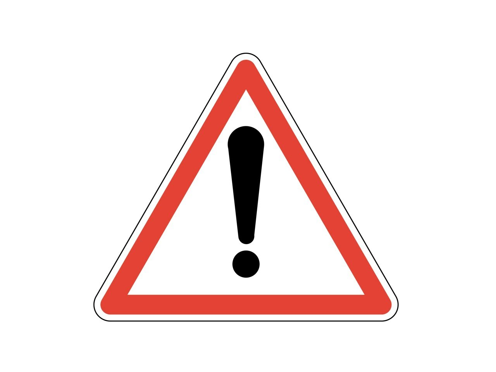

<!--
  Generated template for the RiskyEventsPage page.

  See http://ionicframework.com/docs/components/#navigation for more info on
  Ionic pages and navigation.
-->
<ion-header>
  <ion-navbar>
    <ion-title>Risky Events</ion-title>
  </ion-navbar>
</ion-header>

<ion-content padding>
    <!--  -->
    
    <!-- <ion-list>
      <ion-item>
        <ion-label>Date</ion-label>
        <ion-datetime displayFormat="YYYY-MM-DD" [(ngModel)]="dateTime" disabled></ion-datetime>
      </ion-item>        
    </ion-list> -->
    
    <ion-list radio-group [(ngModel)]="selected" (ionChange)="onValueChanged()">
      <ion-list-header>Will you undergo?</ion-list-header> 
      <ion-item *ngFor="let item of items">
        <ion-label>{{item.title}}</ion-label>
        <ion-radio [value]="item.id" (ionSelect)="onItemSelected(item)"></ion-radio>
      </ion-item>
    </ion-list>   
</ion-content>
